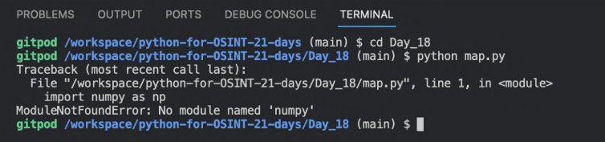
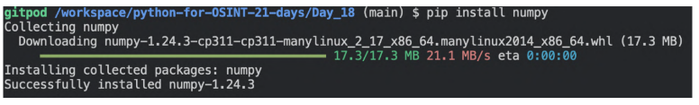

6 Preparando o ambiente de trabalho
Para ter um bom uso deste livro, você precisa de acesso a internet, um computador ou smartphone com Python e Git instalado, uma versão atualizada de qualquer navegador para rodar o Gitpod (um aplicativo web que disponibiliza um ambiente de desenvolvimento no navegador) ou uma conta em sites que fornecem serviços similares: Repl.it, CodePen, CodeAnywhere, etc.
Também recomendo organizar um cronograma de 21 dias, para marcar à medida que for avançando nos conteúdos.
6.1 Como instalar o Python
Não entrarei em detalhes de como fazer a instalação, por haver diferentes tipos de Sistema Operacional. Mas, deixarei aqui links que auxiliarão em cada um deles.
Links de instalação
- Windows: https://www.python.org/downloads/windows/
- MacOS: https://www.python.org/downloads/macos/
- Linux: https://www.python.org/downloads/source/
Instruções de instalação para diferentes Sistemas Operacionais
https://wiki.python.org/moin/BeginnersGuide/Download
Aplicativos para rodar scripts Python no smartphone
- Termux para Android: https://play.google.com/store/apps/details?id=com.termux&hl=en&pli=1 (Utilize as instruções Linux para instalar)
- Pythonista para iOS: https://apps.apple.com/us/app/pythonista-3/id1085978097?ls=1
6.2 Como instalar o Git
Git é um sistema de controle de versão. Ajuda você a examinar os problemas em seu código, permitindo voltar para quando “estava funcionando”, além de permitir organizar o trabalho colaborativo em grandes times (facilitando a identificação de quem quebrou ou ajustou algo).
Você usará Git na maior parte deste livro para copiar os exemplos de código que estão no GitHub e para instalar várias ferramentas OSINT.
Instruções de instalação para Windows, Linux e MacOS: https://git-scm.com/book/en/v2/Getting-Started-Installing-Git
6.3 É obrigatório estudar este livro em exatos 21 dias?
Não, mas também não recomendo fazer tão rápido, exceto se você esteja de férias e/ou tem muito tempo livre. Neste caso, tudo bem fazer 2-3 capítulos por dia (não mais que isto).
Se você trabalha 8 horas ou mais por dia, você pode fazer um capítulo a cada dois ou três dias. Outra opção é fazer uma pausa de alguns dias nos estudos para permitir que você consiga assimilar bem o que está aprendendo. No entanto, não recomendo que você faça por mais de dois ou três meses.
Recomendo que os capítulos sejam estudados na sequência proposta no livro.
Mas tudo bem você seguir suas próprias regras. Estudar em ordem aleatória poderá acontecer é erros de pacotes, como mostra a imagem abaixo.

No caso da imagem, para corrigir este problema, precisaria apenas instalar o pacote correto, usando pip.
Por exemplo:
pip install numpy

Com tudo pronto, agora vamos lá!